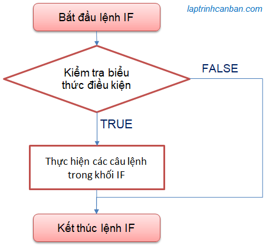
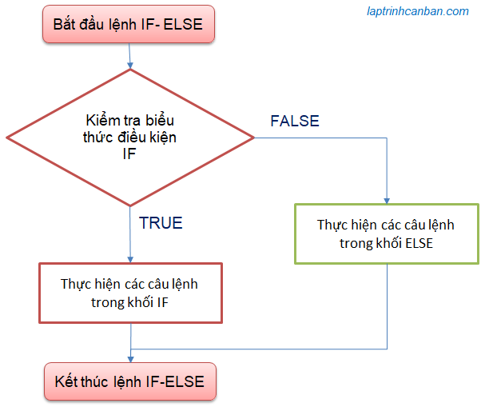
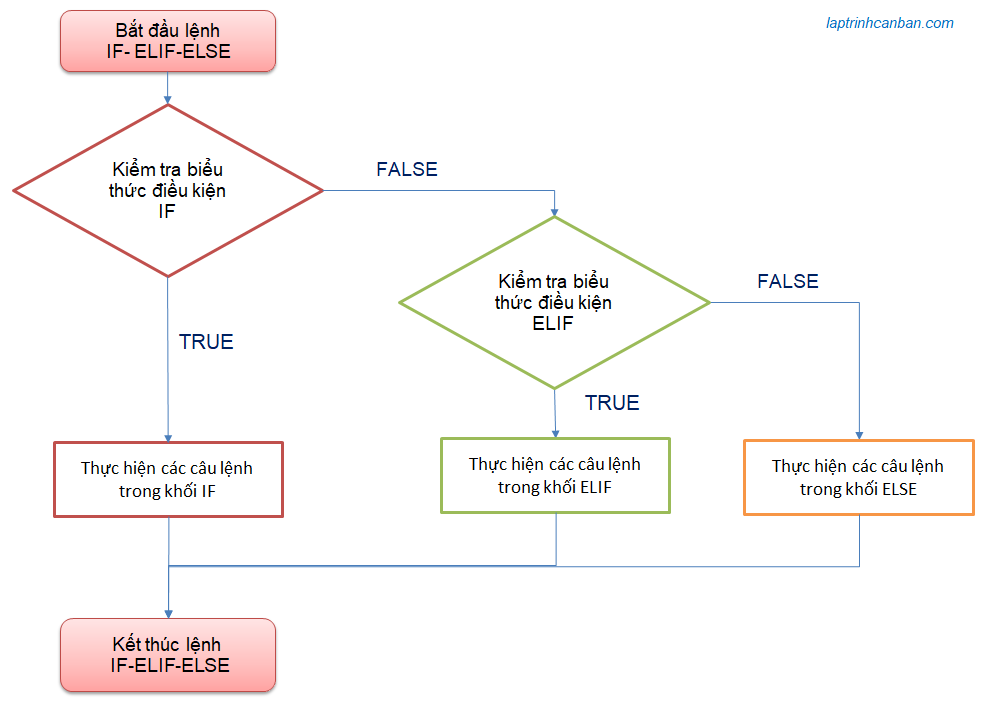

Hướng dẫn cách sử dụng lệnh if trong python.”if” là một trong những câu lệnh quan trọng nhất trong Python, và cũng là một phần quan trọng của lập trình trong bất kỳ ngôn ngữ nào. Nó cho phép bạn thực hiện các kiểm tra điều kiện và thực hiện các hành động khác nhau dựa trên kết quả của kiểm tra đó. Trong bài viết này, chúng ta sẽ tìm hiểu về câu lệnh “if” trong Python, cách sử dụng nó để kiểm tra điều kiện, và các tính năng liên quan.
Câu lệnh if trong python
if trong python là gì
Câu lệnh “if” được sử dụng để kiểm tra một biểu thức hoặc điều kiện. Nếu điều kiện đúng (True), các câu lệnh bên trong khối “if” sẽ được thực hiện. Nếu điều kiện sai (False), khối mã này sẽ được bỏ qua và chương trình sẽ tiếp tục thực hiện các câu lệnh sau câu lệnh “if”.
Chúng ta sử dụng lệnh if trong python với cú pháp sau đây:
if condition:
Các câu lệnh thực hiện nếu điều kiện là đúng
Trong đó, condition là biểu thức hoặc điều kiện mà bạn muốn kiểm tra. Nếu condition đúng, các câu lệnh trong khối “if” sẽ được thực hiện theo thứ tự.
Ví dụ cụ thể:
x = 10 |
Trong ví dụ này, chúng ta kiểm tra xem giá trị của biến x có lớn hơn 5 hay không. Nếu điều kiện đúng, thông điệp “x lớn hơn 5” sẽ được in ra. Trong trường hợp này, điều kiện là đúng, vì x có giá trị là 10, và chương trình sẽ in ra thông điệp.
Sơ đồ xử lý if trong python
Sơ đồ khối câu lệnh điều kiện trong python như sau:

Lưu ý khi viết các câu lệnh trong khối lệnh if, tất cả các câu lệnh mô tả trong khối đều cần được viết với độ thụt lề giống nhau. Về mặc định, chúng ta sẽ dùng 4 ký tự trắng liên tiếp được tạo ra khi bạn nhấn dấu cách Space trên bàn phím 4 lần , hoặc là một dấu tab được tạo ra khi bạn nhấn phím Tab một lần, để quy định độ thụt lề của khối.
- Bạn có thể tìm hiểu chi tiết về cách thụt lề tại bài viết Thụt lề trong python
Trong biểu thức điều kiện, chúng ta sử dụng toán tử so sánh và toán tử logic để mô tả điều kiện. Nếu kết quả của các phép so sánh hoặc logic này True, các lệnh mô tả trong khối mới được thực hiện. Bạn có thể tìm hiểu chi tiết về các loại toán tử sử dụng trong biểu thức điều kiện của câu lệnh if python tại bài viết Toán tử so sánh trong python và toán tử logic trong python.
Ví dụ cụ thể
Sau đây, chúng ta sẽ thử viết một câu lệnh if trong python đơn giản để kiểm tra tuổi của một người đã đủ 18 hay chưa.
Trước hết, chúng ta so sánh giá trị gán trong biến old với số 18 để kiểm tra kết quả biểu thức điều kiện old < 18. Và nếu kết qủa này là True, lệnh thay đổi giá trị result = "Em chưa 18" trong khối mới được thực hiện.
old = 17 |
Nếu chúng ta chỉ định old = 20 trong ví dụ trên, do biểu thức điều kiện old <18 khi này không còn đúng nữa, do đó lệnh thay đổi giá trị result = "Em chưa 18" mô tả trong khối sẽ không được thực hiện. Kết quả, giá trị ban đầu result= "Trên 18 tuổi" không bị thay đổi và được in ra như sau:
old = 20 |
Câu lệnh else trong python
else trong python là gì
Câu lệnh “if” có thể được kết hợp với câu lệnh “else” để xác định một hành động nếu điều kiện là sai. Cú pháp của câu lệnh “if-else” như sau:
if condition: |
Ví dụ:
x = 3 |
Trong ví dụ này, nếu giá trị của x không lớn hơn 5, chương trình sẽ thực hiện câu lệnh bên trong khối “else” và in ra “x không lớn hơn 5”.
Sơ đồ xử lý else trong python
Sơ đồ khối câu lệnh if else trong python như sau:

Ví dụ cụ thể
Giả sử bạn mười bảy tuổi và bạn muốn vào một bar chơi. Khi đó, hãy viết một mã lệnh kiểm tra điều kiện tuổi được vào bar như sau:
old = 17 |
Kết quả:
Em chưa 18, không được vào bar |
Ở trên, do bạn 17 tuổi (old = 17), nên biểu thức điều kiện old < 18 là True, dẫn đến các lệnh trong khối lệnh if sẽ được thực hiện, do đó kết quả Em chưa 18, không được vào bar được in ra màn hình.
Trong trường hợp chỉ định lại tuổi old = 20, khi này biểu thức điều kiện lại trở thành False, do đó các lệnh trong khối lệnh else sẽ được thực hiện, nên kết quả khác sẽ in ra màn hình như sau:
old = 20 |
Câu lệnh elif trong python
elif trong python là gì
Câu lệnh “elif” (viết tắt của “else if”) được sử dụng để kiểm tra nhiều điều kiện liên tiếp. Nó cho phép bạn kiểm tra nhiều điều kiện và thực hiện các hành động khác nhau dựa trên kết quả của các điều kiện. Cú pháp của câu lệnh “if-elif” như sau:
if condition1: |
Ví dụ:
x = 3 |
Trong ví dụ này, chương trình sẽ kiểm tra điều kiện từ trên xuống dưới. Nếu điều kiện đầu tiên là đúng, nó sẽ thực hiện câu lệnh trong khối “if” và bỏ qua các câu lệnh “elif” và “else”. Nếu điều kiện đầu tiên là sai, nó sẽ kiểm tra điều kiện thứ hai và tiếp tục như vậy.
Sơ đồ xử lý else trong python
Sơ đồ khối câu lệnh elif trong python như sau:

Thứ tự xử lý elif và else
Trong lệnh if elif else python các biểu thức điều kiện sẽ được phán đoán từ trên xuống dưới. Nếu biểu thức điều kiện là True (đúng), các lệnh trong khối tương ứng sẽ được thực thi, các biểu thức điều kiện tiếp theo sẽ không được kiểm tra nữa, và toàn bộ mã lệnh được kết thúc.
Nếu biểu thức điều kiện là False (sai) thì tiến hành kiểm tra kết quả của biểu thức điều kiện tiếp theo, và lặp lại quá trình cho tới cuối cùng.
Và nếu như tất cả các biểu thức điều kiện được chỉ định đều cho kết quả False (sai), các lệnh mặc định trong khối else sẽ được thực hiện.
Lại nữa, bạn cũng có thể lược bỏ đi cả khối else, khi đó chương trình sẽ không có lệnh xử lý mặc định, và trong trường hợp toàn bộ các biểu thức điều kiện được chỉ định đều False (sai), sẽ không có câu lệnh nào được thực thi hay kết quả nào được trả về.
Ví dụ cụ thể
Ví dụ về sử dụng elif trong python như sau. Chúng ta cũng sẽ sử dụng lại ví dụ kiểm tra tuổi vào bar như trên, nhưng sẽ kèm thêm một trường hợp nữa là kiểm tra thẻ chứng minh nhân dân:
old = 17 |
Với ví dụ trên, chỉ khi nào bạn có mang theo CMND và trên 18 tuổi thì kết quả của lệnh elif trong python mới cho bạn vào bar mà thôi.
Toán tử So Sánh
Các điều kiện trong câu lệnh “if” dựa trên toán tử so sánh. Python cung cấp nhiều toán tử so sánh, bao gồm:
==: So sánh bằng!=: So sánh khác<: So sánh nhỏ hơn>: So sánh lớn hơn<=: So sánh nhỏ hơn hoặc bằng>=: So sánh lớn hơn hoặc bằng
Ví dụ:
x = 5 |
Toán tử Logic
Ngoài các toán tử so sánh, bạn cũng có thể sử dụng các toán tử logic để kết hợp nhiều điều kiện trong câu lệnh “if”. Các toán tử logic bao gồm:
and: True nếu cả hai điều kiện đều đúng.or: True nếu ít nhất một trong hai điều kiện là đúng.not: Đảo ngược kết quả của điều kiện.
Ví dụ:
x = 5 |
Trong ví dụ này, câu lệnh “if” sẽ chỉ đúng nếu cả x và y đều lớn hơn 0.
Sử dụng câu lệnh “if” trong thực tế
Câu lệnh “if” rất quan trọng trong việc kiểm tra điều kiện và thực hiện các hành động dựa trên kết quả kiểm tra đó. Một số ứng dụng thực tế của câu lệnh “if” bao gồm:
- Xử lý dữ liệu: Kiểm tra và xử lý dữ liệu dựa trên các điều kiện, ví dụ: lọc dữ liệu, sắp xếp, và biến đổi.
- Điều khiển luồng chương trình: Quyết định luồng thực hiện của chương trình dựa trên các điều kiện, ví dụ: menu lựa chọn, xử lý lỗi.
- Kiểm tra và xử lý sự kiện: Đáp ứng các sự kiện trong ứng dụng, ví dụ: phản hồi người dùng, xử lý nút nhấn, và các tình huống khác.
Tổng kết
Trên đây Kiyoshi đã hướng dẫn bạn về cách sử dụng các loại câu lệnh lệnh if trong python rồi. Câu lệnh “if” là một công cụ mạnh mẽ trong lập trình Python và ngôn ngữ lập trình khác. Nó cho phép bạn kiểm tra điều kiện và thực hiện các hành động dựa trên kết quả kiểm tra đó. Bằng cách sử dụng câu lệnh “if” cùng với các câu lệnh “else” và “elif,” bạn có thể xây dựng các khối mã phức tạp để điều khiển luồng của chương trình. Điều này làm cho bạn có khả năng tạo ra các ứng dụng đa dạng và linh hoạt dựa trên các điều kiện cụ thể.
URL Link
HOME › python cơ bản - lập trình python cho người mới bắt đầu>>07. lệnh điều kiện trong python